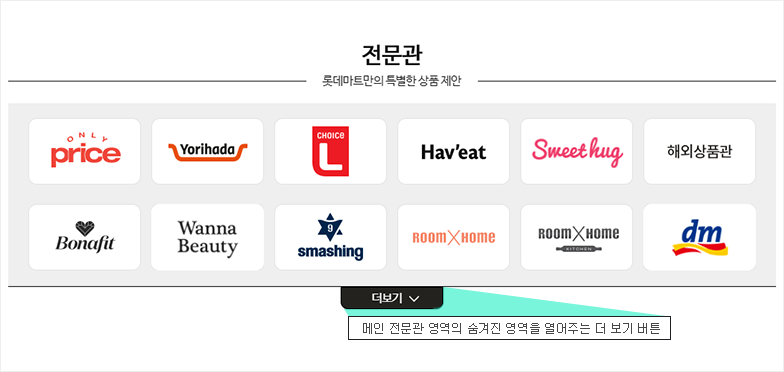
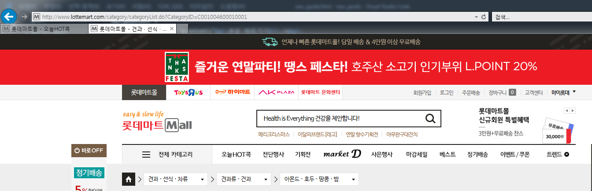
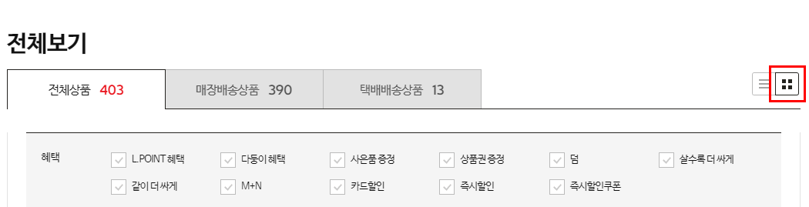
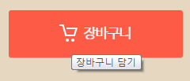

PC 접근성 검사항목
- PC 웹 접근성 지침에서 검사항목 별, 검사방법을 한 눈에 파악할 수 있도록 별도 정리하여 제공합니다.
1. 이미지에 대한 적절한 대체텍스트 제공
- 텍스트 아닌 콘텐츠는 그 의미나 용도를 이해할 수 있도록 대체 텍스트를 제공해야 한다.
- 대체 텍스트는 중복으로 제공하지 않는다.
[적용기술]
- - <img>, <input type=”image”>, <area>, <applet> : alt 속성으로 의미나 용도를 이해할 수 있도록 적절한 대체 텍스트 제공
- - 배경이미지 (IR기법) : 의미있는 배경 이미지를 사용하였을 경우, 배경이미지에 대한 대체 텍스트 제공
- - 링크, 버튼 : 용도가 명확한 이미지 링크, 이미지 버튼 등은 핵심기능에 대한 설명을 구체적으로 대체 텍스트 제공 (아이콘 포함)
- - 웹 애플리케이션을 제공할 때, 동등한 기능을 수행 할 수 있는 대체 콘텐츠를 함께 제공해야 함.
- 자동검사방법
- <img>, <input type=”image”>, <area>, <applet> 요소의 alt 속성 유무 체크
- 수동검사방법
-
- alt 속성 값이 있는 <img>, <input type=”image”>, <area>, <applet> 요소 중 alt값을 적절한 대체 텍스트로 제공하였는지 체크
- IR 기법내 적절한 대체 텍스트를 제공 하였는지 체크
예시
- 롯데마트 로고 이미지의 대체텍스트 제공
<img src="http://image.lottemart.com/v3/images/layout/h1_logo_01.gif" alt="롯데마트 Mall 새로운 생활의 큐레이터">
예시
- 메인 슬라이드 이미지 적용 예시 : 이미지가 제공하는 모든 내용을 alt 속성에 제공하여 이미지의 정보를 이해할 수 있음

<img src="http://image.lottemart.com/lim/static_root/images/front/contents/banner/2018/20181207015150210.jpg" alt="M쿠폰 회원 특별 혜택전 최대 20% 추가할인 상품 다모았다! " width="1600" height="500">
예시
- 아이콘 이미지 대체 텍스트 제공 : 배경이미지 아이콘의 내용과 동일한 대체 텍스트 제공

<i class="icon-goods-discount"><em class="number">30</em> <span class="blind">% 할인</span></i>
<i class="icon-goods-type1">살수록 더싸게</i>
<i class="icon-band-delivery1">매장배송</i>
2. 자막제공
- 광고성 콘텐츠(자막이 없는 동영상) 의 내용설명 글을 제공한다.
- 음성이 없는 경우 : 영상에 대한 설명글 제공
- 음성이 있는 경우 : 영상에 대한 원고 또는 싱크되는 자막 제공
[적용기술]
- - 멀티미디어 콘텐츠를 장애인도 비장애인과 동등하게 인식할 수 있도록 제작해야 한다.
- - 가장 바람직한 방법은 닫힌 자막을 오디오와 동기화시켜 제공하는 것임
-
- 대체 수단 제공 : 다음 중 한 가지 이상의 대체 수단을 제공해야 한다
- 자막제공
- 대본제공
- 수화제공
- 자동검사방법
- -
- 수동검사방법
- -멀티미디어 콘텐츠에 대한 자막, 원고, 수화 제공 유무 체크
3. 색에 무관한 콘텐츠 인식
- 컨텐츠는 색에 관계없이 인식될 수 있어야 한다. - 특정한 색을 구분할 수 없는 사용자나 흑백 디스플레이 사용자 등이 색을 배제하여도 컨텐츠를 인식할 수 있도록 제공해야 한다.
[적용기술]
- 콘텐츠(그래프, 차트, 지도 등)는 색에 관계없이 인식될 수 있게 제공해야 함
- 콘텐츠에서 제공하는 모든 정보는 색을 배제하여도 특정한 색을 구별할 수 없는 사용자나 흑백 디스플레이 사용자, 흑백 인쇄물을 보는 사용자가 해당 콘텐츠를 인식할 수 있도록 제공해야 함
- 자동검사방법
- -
- 수동검사방법
-
- 색상만으로 콘텐츠(그래프, 차트, 지도, 페이지 네비게이션 등)을 분별 하도록 제공 했는지 체크
- 페이지 네비게이션, 메뉴, 현재 위치 등의 정보를 명암, 패턴 등의 변화없이 색상만으로 제공 했는지 체크
4. 명확한 지시사항 제공
- 지시사항은 모양, 크기, 위치, 방향, 색, 소리 등에 관계없이 인식될 수 있어야 한다.
- 특정한 감각(시각, 청각 등)에 의존하여 지시사항을 제공할 경우 해당 감각에 장애가 있다면 인식할 수 없으므로, 다른 감각을 통해서도 인식할 수 있도록 지시사항을 제공해야 한다.
- 지시사항 정보를 특정 감각(색, 크기, 모양, 방향 등)에만 의존하여 제공했는지 체크
예시
- 메인화면 전문관 영역의 더보기 버튼 링크의 기능에 대해 정확히 어떤 것을 더 보는 것인지에 대해 설명하는 대체 텍스트를 제공
<button type="button" class="md-more" title="메인 전문관 영역의 숨겨진 영역을 열어주는 더보기 버튼">더보기</button>
5. 텍스트 콘텐츠의 명도 대비
- 전경 콘텐츠와 배경은 4.5:1 이상의 명도 대비를 유지한다.
- 전경 콘텐츠는 정보를 전달하고 있는 '문자, 아이콘, 콘트롤(a, button, input, select, textarea)'의 선과 면을 의미한다.
- 문자 크기가 bold 19px 이상 또는 normal 24px 이상인 경우 3:1 이상의 명도 대비를 유지한다.
- 아이콘, 콘트롤 등 시각 정보가 3px 이상 두꺼운 경우 3:1 이상의 명도 대비를 유지한다.
6. 자동 재생 금지
- 롯데마트 PC 웹에서 해당사항 없음.
- 일부 슬라이드나 자동재생 요소들은 해당영역으로 초점이 진입되는 순간 자동 정지되도록 구현됨.
예시
- 롯데마트 메인 비주얼 슬라이드의 경우 초점 진입시 자동 정지됨
var fixGnbLastFocusable = function(){
var $gnb = $('#gnbScrollFixed'),
$gnbToggles = $gnb.find('.wrap-toggle'),
$gnbLastMenu = _wac.getFocusables($gnbToggles.last().find('.wrap-subnav')).last(),
$nextEl = $directionFocusables.first();
var tabHandler = function(e){
!_wac.isShiftTabEvent(e)
&& _wac.isTabEvent(e)
&& !_wac.isEmpty($nextEl)
&& _wac.onNextAsync(e, $nextEl);
contSlider.stopAuto();
};
_wac.wireUpEventAsync($gnbLastMenu, 'keydown', tabHandler);
return $gnbLastMenu;
};
7. 콘텐츠 간의 구분
- 롯데마트 PC 웹에서 해당사항 없음.
8. 키보드 사용 보장 (입력장치 접근성)
- 모든 기능은 키보드 만으로도 사용할 수 있어야 한다.
- 키보드에 의한 초점은 논리적으로 이동해야 하며, 시각적으로 구별할 수 있어야 한다.
예시
- 롯데마트 gnb 메뉴의 키보드 이용
<img src="http://image.lottemart.com/v3/images/layout/h1_logo_01.gif" alt="롯데마트 Mall 새로운 생활의 큐레이터">
9. 초점 이동
예시
- 롯데마트 메인 화면의 BEST 메뉴내의 키보드 이용

<article class="main-best">
<div class="best-nav jq-tab">
<a href="#bestFood" class="best-tab01 active" title="현재 선택">FOOD</a>
<a href="#bestLife" class="best-tab02">LIFE</a>
</div>
<div class="best-conts js-tabcontents">
<section class="best-cont clear-after best-cont1 active" id="bestFood">
<h3 class="blind">FOOD</h3>
<nav class="best-tab js-tabnav" id="bestFood">
<a href="javascript:;" class="nav-link nav-link1-1 active" data-category-id="foodAll" data-tab-index="02" data-current-page="1"><strong class="inner">전체</strong></a>
<a href="javascript:;" class="nav-link nav-link1-2" data-category-id="C0010011" data-tab-index="02" data-current-page="2"><strong class="inner">쌀/잡곡</strong></a>
<a href="javascript:;" class="nav-link nav-link1-3" data-category-id="C0010012" data-tab-index="02" data-current-page="3"><strong class="inner">채소</strong></a>
<a href="javascript:;" class="nav-link nav-link1-4" data-category-id="C0010013" data-tab-index="02" data-current-page="4"><strong class="inner">과일</strong></a>
<a href="javascript:;" class="nav-link nav-link1-5" data-category-id="C0010014" data-tab-index="02" data-current-page="5"><strong class="inner">정육/계란</strong></a>
<a href="javascript:;" class="nav-link nav-link1-6" data-category-id="C0010015" data-tab-index="02" data-current-page="6"><strong class="inner">생선/<br>건해산물</strong></a>
<a href="javascript:;" class="nav-link nav-link1-7" data-category-id="C0010046" data-tab-index="02" data-current-page="7"><strong class="inner">견과/선식</strong></a>
<a href="javascript:;" class="nav-link nav-link1-8" data-category-id="C0010016" data-tab-index="02" data-current-page="8"><strong class="inner">냉장/냉동/<br>간편식</strong></a>
<a href="javascript:;" class="nav-link nav-link1-9" data-category-id="C0010017" data-tab-index="02" data-current-page="9"><strong class="inner">가공식품/<br>대용식</strong></a>
<a href="javascript:;" class="nav-link nav-link1-10" data-category-id="C0010052" data-tab-index="02" data-current-page="10"><strong class="inner">친환경식품</strong></a>
<a href="javascript:;" class="nav-link nav-link1-11" data-category-id="C0010053" data-tab-index="02" data-current-page="11"><strong class="inner">건강식품</strong></a>
<a href="javascript:;" class="nav-link nav-link1-12" data-category-id="C0010040" data-tab-index="02" data-current-page="12"><strong class="inner">조리식품</strong></a>
</nav>
<div class="wrap-tab-cont js-tabcont"><div id="bestFood-foodAll" class="tab-cont active"><div class="wrap-prod-list">
<div class="prod-list clear-after">
<!-- wrapper tag가 유동적이라서 헷갈릴수 있어 일부러 들여쓰기 이렇게 함 -->
<article class="product-article" data-panel="product">
<!-- TODO : 해당 페이지 사용하는 전체 쿼리 찾아서 CURR_SELL_PRC > 100 조건 걸려있는지 확인후에 제거 필요 -->
<!-- 베스트 순위 표시 -->
<!-- ** 추천상품 썸네일 -->
<div class="wrap-thumb">
<a href="javascript:;" onclick="goProductDetail('C001001200040001', '0400669780006', 'N', '', '', '00001');return false; " class="thumb-link" data-category-id="C001001200040001" data-prod-cd="0400669780006">
<img src="http://image.lottemart.com/lim/static_root/images/prodimg/04006/0400669780006_1_208.jpg" width="208" id="prodImg_0400669780006" alt="파프리카(개)" class="thumb" onerror="javascript:showNoImage(this)">
</a>
<!-- 할인상품 썸네일 할인스티커 -->
<span class="wrap-tag">
<!-- 우선순위에 의한 1개만 노출 -->
</span>
<span class="wrap-band ">
<i class="icon-band-delivery1">
icon-band-delivery1</i>
</span>
<span class="prod-link">
<a href="javascript:;" data-button-name="btnAddWish" data-category-id="C001001200040001" data-product-code="0400669780006" title="위시리스트 담기" class="dibs ">
<span class="blind">위시리스트</span>
</a>
<a href="javascript:;" class="blank" title="새 창 열림" onclick="goProdZoom('C001001200040001','0400669780006', '001', 'N', 'N','00001'); event.stopPropagation();">
<span class="blind">새창 보기</span>
</a>
</span>
</div>
<!-- 20160925 중량미노출 수정 -->
<div class="wrap-info">
<p class="prod-name">
<strong>
<a href="javascript:;" class="thumb-link" onclick="goProductDetail('C001001200040001', '0400669780006', 'N', '', '', '00001');return false;" data-category-id="C001001200040001" data-prod-cd="0400669780006">
파프리카(개)</a>
</strong>
</p>
<p class="price-max">판매가 <span class="num-n"><em>1,180</em></span>원
</p>
<div class="wrap-spinner">
<div class="spinner-input" data-is-range="true">
<label for="orderQty_0400669780006" class="blind">수량</label>
<input id="orderQty_0400669780006" name="orderQty_0400669780006" type="text" value="1" max="200" min="1" data-category-id="C001001200040001" data-prod-cd="0400669780006" style="ime-mode:disabled" maxlength="3" title="수량">
<button type="button" class="sp-minus" title="수량 감소" data-option-yn="N"><i class="ico-minus">감소</i></button><button type="button" class="sp-plus" title="수량 증가" data-option-yn="N"><i class="ico-plus">증가</i></button></div>
<button id="basketBtn_0400669780006" title="장바구니 담기" type="button" class="btn-basket" data-prod-cd="0400669780006" data-category-id="C001001200040001" data-is-sold-out="false" data-max-qty="200" data-min-qty="1" data-method="basket" data-is-manufacturing-product="false" data-option-yn="N" data-prod-type-cd="01" data-prod-title="파프리카(개)">
</button>
</div>
</div>
</article>
<!-- 1depth에서 사용 -->
<!-- wrapper tag가 유동적이라서 헷갈릴수 있어 일부러 들여쓰기 이렇게 함 -->
<article class="product-article" data-panel="product">
<!-- TODO : 해당 페이지 사용하는 전체 쿼리 찾아서 CURR_SELL_PRC > 100 조건 걸려있는지 확인후에 제거 필요 -->
<!-- 베스트 순위 표시 -->
<!-- ** 추천상품 썸네일 -->
<div class="wrap-thumb">
<a href="javascript:;" onclick="goProductDetail('C001001700130001', '8801056049935', 'N', '', '', '00001');return false; " class="thumb-link" data-category-id="C001001700130001" data-prod-cd="8801056049935">
<img src="http://image.lottemart.com/lim/static_root/images/prodimg/88010/8801056049935_1_208.jpg" width="208" id="prodImg_8801056049935" alt="롯데 아이시스8.0(2L*6)" class="thumb" onerror="javascript:showNoImage(this)">
</a>
<span class="wrap-tag">
</span>
<span class="wrap-band ">
<i class="icon-band-delivery1">
icon-band-delivery1</i>
</span>
<span class="prod-link">
<a href="javascript:;" data-button-name="btnAddWish" data-category-id="C001001700130001" data-product-code="8801056049935" title="위시리스트 담기" class="dibs ">
<span class="blind">위시리스트</span>
</a>
<a href="javascript:;" class="blank" title="새 창 열림" onclick="goProdZoom('C001001700130001','8801056049935', '001', 'N', 'N','00001'); event.stopPropagation();">
<span class="blind">새창 보기</span>
</a>
</span>
</div>
<!-- 20160925 중량미노출 수정 -->
<div class="wrap-info">
<p class="prod-name">
<strong>
<a href="javascript:;" class="thumb-link" onclick="goProductDetail('C001001700130001', '8801056049935', 'N', '', '', '00001');return false;" data-category-id="C001001700130001" data-prod-cd="8801056049935">
롯데 아이시스8.0(2L*6)</a>
</strong>
</p>
<p class="price-max">판매가 <span class="num-n"><em>3,780</em></span>원
</p>
<div class="wrap-spinner">
<div class="spinner-input" data-is-range="true">
<label for="orderQty_8801056049935" class="blind">수량</label>
<input id="orderQty_8801056049935" name="orderQty_8801056049935" type="text" value="1" max="2" min="1" data-category-id="C001001700130001" data-prod-cd="8801056049935" style="ime-mode:disabled" maxlength="3" title="수량">
<button type="button" class="sp-minus" title="수량 감소" data-option-yn="N"><i class="ico-minus">감소</i></button><button type="button" class="sp-plus" title="수량 증가" data-option-yn="N"><i class="ico-plus">증가</i></button></div>
<button id="basketBtn_8801056049935" title="장바구니 담기" type="button" class="btn-basket" data-prod-cd="8801056049935" data-category-id="C001001700130001" data-is-sold-out="false" data-max-qty="2" data-min-qty="1" data-method="basket" data-is-manufacturing-product="false" data-option-yn="N" data-prod-type-cd="01" data-prod-title="롯데 아이시스8.0(2L*6)">
</button>
</div>
</div>
</article>
<article class="product-article" data-panel="product">
<div class="wrap-thumb">
<a href="javascript:;" onclick="goProductDetail('C001001700140010', '8801062517916', 'N', '', '', '00001');return false; " class="thumb-link" data-category-id="C001001700140010" data-prod-cd="8801062517916">
<img src="http://image.lottemart.com/lim/static_root/images/prodimg/88010/8801062517916_1_208.jpg" width="208" id="prodImg_8801062517916" alt="롯데 칙촉(180G)" class="thumb" onerror="javascript:showNoImage(this)">
</a>
<span class="wrap-tag">
<i class="icon-goods-type1">살수록더싸게</i>
</span>
<span class="wrap-band ">
<i class="icon-band-delivery1">
icon-band-delivery1</i>
</span>
<span class="prod-link">
<a href="javascript:;" data-button-name="btnAddWish" data-category-id="C001001700140010" data-product-code="8801062517916" title="위시리스트 담기" class="dibs ">
<span class="blind">위시리스트</span>
</a>
<a href="javascript:;" class="blank" title="새 창 열림" onclick="goProdZoom('C001001700140010','8801062517916', '001', 'N', 'N','00001'); event.stopPropagation();">
<span class="blind">새창 보기</span>
</a>
</span>
</div>
<!-- 20160925 중량미노출 수정 -->
<div class="wrap-info">
<p class="prod-name">
<strong>
<a href="javascript:;" class="thumb-link" onclick="goProductDetail('C001001700140010', '8801062517916', 'N', '', '', '00001');return false;" data-category-id="C001001700140010" data-prod-cd="8801062517916">
롯데 칙촉(180G)</a>
</strong>
</p>
<p class="price-max">판매가 <span class="num-n"><em>3,840</em></span>원
</p>
<div class="wrap-spinner">
<div class="spinner-input" data-is-range="true">
<label for="orderQty_8801062517916" class="blind">수량</label>
<input id="orderQty_8801062517916" name="orderQty_8801062517916" type="text" value="1" max="100" min="1" data-category-id="C001001700140010" data-prod-cd="8801062517916" style="ime-mode:disabled" maxlength="3" title="수량">
<button type="button" class="sp-minus" title="수량 감소" data-option-yn="N"><i class="ico-minus">감소</i></button><button type="button" class="sp-plus" title="수량 증가" data-option-yn="N"><i class="ico-plus">증가</i></button></div>
<button id="basketBtn_8801062517916" title="장바구니 담기" type="button" class="btn-basket" data-prod-cd="8801062517916" data-category-id="C001001700140010" data-is-sold-out="false" data-max-qty="100" data-min-qty="1" data-method="basket" data-is-manufacturing-product="false" data-option-yn="N" data-prod-type-cd="01" data-prod-title="롯데 칙촉(180G)">
</button>
</div>
</div>
</article>
<!-- 1depth에서 사용 -->
</div>
</div>
</div></div>
</section>
<section class="best-cont clear-after best-cont2" id="bestLife">
<h3 class="blind">LIFE</h3>
<nav class="best-tab js-tabnav" id="bestLife">
<a href="javascript:;" class="nav-link nav-link2-1" data-category-id="lifeAll" data-tab-index="03" data-current-page="13"><strong class="inner">전체</strong></a>
<a href="javascript:;" class="nav-link nav-link2-2" data-category-id="C0010021" data-tab-index="03" data-current-page="14"><strong class="inner">유아/<br>출산용품</strong></a>
<a href="javascript:;" class="nav-link nav-link2-3" data-category-id="C0010023" data-tab-index="03" data-current-page="15"><strong class="inner">세제/휴지</strong></a>
<a href="javascript:;" class="nav-link nav-link2-4" data-category-id="C0010024" data-tab-index="03" data-current-page="16"><strong class="inner">헤어/바디</strong></a>
<a href="javascript:;" class="nav-link nav-link2-5" data-category-id="C0010025" data-tab-index="03" data-current-page="17"><strong class="inner">가구/수납/조명/보수</strong></a>
<a href="javascript:;" class="nav-link nav-link2-6" data-category-id="C0010026" data-tab-index="03" data-current-page="18"><strong class="inner">주방/<br>청소용품</strong></a>
<a href="javascript:;" class="nav-link nav-link2-7" data-category-id="C0010027" data-tab-index="03" data-current-page="19"><strong class="inner">문구/<br>사무용품</strong></a>
<a href="javascript:;" class="nav-link nav-link2-8" data-category-id="C0010115" data-tab-index="03" data-current-page="20"><strong class="inner">침구/원예/데코</strong></a>
<a href="javascript:;" class="nav-link nav-link2-9" data-category-id="C0010028" data-tab-index="03" data-current-page="21"><strong class="inner">패션의류/<br>언더웨어</strong></a>
<a href="javascript:;" class="nav-link nav-link2-10" data-category-id="C0010029" data-tab-index="03" data-current-page="22"><strong class="inner">신발/잡화</strong></a>
<a href="javascript:;" class="nav-link nav-link2-11" data-category-id="C0010030" data-tab-index="03" data-current-page="23"><strong class="inner">스포츠/레저</strong></a>
<a href="javascript:;" class="nav-link nav-link2-12" data-category-id="C0010054" data-tab-index="03" data-current-page="24" value="C0010054"><strong class="inner">친환경<br>생활용품</strong></a>
</nav>
<div class="wrap-tab-cont js-tabcont"></div>
</section>
</div>
<a href="/best/bestMain.do?SITELOC=AC023" class="list-more">베스트 더보기</a>
</article>
10. 조작가능
- 롯데마트 PC 웹에서 해당사항 없음.
11. 응답시간 조절
- 롯데마트 PC 웹에서 해당사항 없음.
12. 정지 기능 제공
- 자동으로 변경되는 콘텐츠는 움직임을 제어할 수 있어야 한다.
예시
- 포커스 진입시 자동멈춤 처리되는 메인 비주얼 슬라이드

//gnb마지막 요소에서 상단 모양 컨틀롤러로 촛점이동
var fixGnbLastFocusable = function(){
var $gnb = $('#gnbScrollFixed'),
$gnbToggles = $gnb.find('.wrap-toggle'),
$gnbLastMenu = _wac.getFocusables($gnbToggles.last().find('.wrap-subnav')).last(),
$nextEl = $directionFocusables.first();
var tabHandler = function(e){
!_wac.isShiftTabEvent(e)
&& _wac.isTabEvent(e)
&& !_wac.isEmpty($nextEl)
&& _wac.onNextAsync(e, $nextEl);
contSlider.stopAuto();
};
_wac.wireUpEventAsync($gnbLastMenu, 'keydown', tabHandler);
return $gnbLastMenu;
};
13. 깜빡임과 번쩍임 사용 제한
- 롯데마트 PC 웹에서 해당사항 없음.
14. 반복영역 건너뛰기
- 반복적인 콘텐츠 영역의 시작 부분에 건너뛰기 링크 제공
- 페이지마다 반복되는 콘텐츠(메뉴 등)를 건너뛰어 핵심 콘텐츠로 바로 접근할 수 있도록 페이지 최상단에 제공한다.
- 해당 링크를 display:none으로 처리하지 않으며, 키보드로 접근이 가능해야 한다.
- 콘텐츠의 최상단(body 바로 아래) 제공해야 한다.
- 링크명은 목적지를 명확히 알 수 있도록 일관된 형식으로 제공해야 한다.
- 메뉴 건너뛰기(x), 본문 바로가기(O)
예시
- 롯데마트 상단의 본문 바로가기 버튼

<nav class="skip-menu">
<a href="#contents">본문 바로가기</a>
<a href="#gnbScrollFixed">주메뉴 바로가기</a>
</nav>
14. 타이틀 및 제목 제공
- 페이지, 프레임, 콘텐츠 블록에는 적절한 제목을 제공해야 한다.
- 적절한 제목은 페이지, 프레임, 콘텐츠 블록을 유추하여, 사용자가 웹 콘텐츠를 운용하기 쉽게 도와준다.
- 1 웹 페이지 제목
- 문서 내용을 표현하는데 사용하여야 하며, 여러 페이지간 콘텐츠 파악 용도 사용된다. 서로 다른 내용의 페이지를 동일한 제목 제공 시 문서 내용을 파악하는데 어려움이 발생한다.
- 2 프레임 제목
- 사용자(시각 장애인, 인지장애인, 심각한 지체장애인)는 프레임에 초점 이동시 어떠한 프레임인지 쉽게 알 수 있도록 한다.
- 3 콘텐츠 블록 제목
- <h1>, <h2> 등 제목요소를 사용할 경우, 제목과 본문을 구분할 수 있으며, 제목간 이동 기능을 가능하게 한다. 또한 목차 기능으로 활용하여 문맥을 파악하는데 도움을 준다. 이 외 다양하게 활용할 수 있다.
예시
- 롯데마트 각페이지에 맞는 올바른 페이지 타이틀 제목 제공

<script type="text/javascript">
document.title = "롯데마트몰 - ${NAVILIST[1].NAME} > ${NAVILIST[2].NAME} > ${NAVILIST[3].NAME}";
$.utils.setMetaTag({
'title' : '롯데마트몰 - ${NAVILIST[1].NAME} > ${NAVILIST[2].NAME} > ${NAVILIST[3].NAME}'
});
</script>
16. 적절한 링크 텍스트
- 링크 텍스트는 용도나 목적을 이해할 수 있도록 제공해야 한다.
- 링크 텍스트를 "여기를 클릭하세요." 나 "여기" 와 같은 애매모호한 표현을 사용하면 시각장애인이나 인지장애인 뿐만 아니라 비장애인들도 링크를 클릭했을 때 어떤 반응이나 어떤 페이지로 이동될 지 예측하기 어렵다.
예시
- 상품 리스트 페이지를 리스트형으로 볼 것인지, 썸네일형으로 볼 것인지 보는 방식을 선택하는 링크 대한 올바른 텍스트를 제공

<div class="set-sort">
<a id="aList" name="btnViewType" href="javascript:;" data-type="list" class="list-sort"><span class="blind">리스트형 보기</span></a>
<a id="aImg" name="btnViewType" href="javascript:;" data-type="img" class="image-sort active" title="현재 선택"><span class="blind">썸네일형 보기</span></a>
</div>
예시
- 장바구니 링크 요소의 내용에 알맞는 올바른 링크의 기능에대해 설명하는 대체 텍스트를 제공

<button type="button" class="btn-large-type1" title="장바구니 담기" data-prod-cd="D000003514313" data-category-id="C001013400080002" data-max-qty="100000" data-min-qty="1" data-method="basket" data-is-sold-out="false" data-option-yn="Y" data-prod-type-cd="05" data-is-manufacturing-product="false" data-prod-title="울트라히트 아동/주니어 9부세트 " id="basketBtn_D000003514313" tabindex="0">
<i class="ico-basket">장바구니</i>
</button>
17. 기본 언어 표시
- 기본 언어 명시는 화면 낭독 프로그램이 언어를 인식하여 자동으로 음성을 변환하거나, 해당 언어에 적합한 발음을 제공할 수 있도록 한다.
- 웹 페이지에 주로 사용하는 언어를 <html> 요소에 lang 속성을 지정하여 명시하도록 한다.
18. 사용자 요구에 따른 실행
- 사용자가 의도하지 않은 기능(새 창, 초점 변화 등)은 실행되지 않아야 한다.
- 실행은 onclick, enter 로 가능하게 적용한다.
- 새창 및 팝업창의 경우 a 요소에 target="_blank" 로 지정한다.
- 웹 사이트 로딩시 자동으로 실행되는 콘텐츠(팝업창, 레이어 팝업, 배경음 포함) 을 사용하지 않는다.
예시
- L.POINT 카드번호 입력시 자동 초점 넘어가던 현상 제거

<img src="http://image.lottemart.com/v3/images/layout/h1_logo_01.gif" alt="롯데마트 Mall 새로운 생활의 큐레이터">
18. 사용자 요구에 따른 실행
- 콘텐츠는 논리적인 순서로 제공해야 한다.
- 콘텐츠 및 마크업이 논리적인 순서로 구성해야 한다.
19. 콘텐츠의 선형화 (콘텐츠의 선형 구조)
- 표는 이해하기 쉽게 구성해야 한다.
- 표의 제목을 <caption> 요소로 제공
- 표의 구조 또는 내용에 대한 요약을 summary 속성으로 제공
- 표의 헤더 셀(<th> 요소)과 , 데이터 셀(<td> 요소)의 관계를 제공
- 복잡한 표의 경우 id, header, 일반적인 표의 경우 scope 제공
20. 표의 구성
- 표의 구성
21. 레이블 제공
- 입력 서식에는 대응하는 레이블을 제공해야 한다.
- 입력 서식(<input>, <textarea>, <select> 요소 등)에 대응하는 레이블(<label> 요소, title 속성)을 제공해야 한다.
22. 오류정정
- 입력 오류를 정정할 방법을 제공해야 한다.
- 입력 서식을 잘못 작성한 경우, 해당 서식 필드로 초점 이동 제공
- 입력 값 또는 형식에 대한 예시 제공
- 필수 입력사항이나 일정한 양식에 따른 입력란에 대해 사용자가 입력하지 않거나 잘못 입력한 경우 사용자의 실수가 어떤 것인지 안내 제공
23. 마크업오류방지
- 마크업 언어의 요소는 열고 닫음, 중첩 관계 및 속성 선언에 오류가 없어야 한다.
24. 웹 애플리케이션 접근성 준수
- 콘텐츠에 포함된 웹 애플리케이션은 접근성이 있어야 한다. - 웹 애플리케이션(JavaScript, 애플릿, ActiveX, Flash)이 자체적인 접근성을 준수해야 함
PC 접근성 지표
- 웹 접근성 품질 체크를 위한 지표로 외부 접근성 조사 대응과 주요서비스 대응을 위한 지표입니다.